Coverage
Every count carries its total. The armed ratio is separate on purpose: a suite is only known to bite where an assertion was watched to fail with the behaviour removed.
Full run — every case in the campaign was run, 2026-08-19T23:52:31+00:00.
Oracle mix: structural 2 · structural-visual 5 · outcome 40 · metamorphic 5 · raster-visual 20 · unrated 4. A case's rung is what it checks, not how hard it looked. Presence and touch prove a surface rendered; only outcome, metamorphic and visual prove it did something.
Declared sample: pairwise floor; 3-way on theme×viewport×surface (Mac boards) and role×state×network (honesty); oversample honesty-guardrails; drop high-contrast (no authored tokens); drop RTL (no localisation); pairing-transport cells blocked (I5: unimplemented)
| Case | Surface | State | Lane | Assertion | Oracle | Status | Why | Armed | Evidence |
|---|---|---|---|---|---|---|---|---|---|
| CASE-0001 | SURF-001 | macos-glass | outcome | pass | Sidebar AXPress selected Activity, Servers, Skills, Discover, Inbox, Checks, Cleanup, Settings; window titles matched. Cmd+1–7 not part of this case. ARMED: predicate watched to fail under the SURF-001 decoy. | yes | mac-glass-capture.log SURF-002.title.txt SURF-003.title.txt SURF-008.title.txt glass-assert.json | ||
| CASE-0002 | SURF-001 | macos-glass | outcome | n/a | n/a: posting Cmd+1–7 to a background pid does not change SwiftUI's focused scene (measured: title stayed Inbox then Activity); proving the shortcuts requires the window frontmost, which this campaign refuses | — | SURF-001.keyboard.txt SURF-001.menu.txt glass-assert.json | ||
| CASE-0003 | SURF-002 | macos-glass | outcome | pass | AX: 2 tools from 4 servers · 1 running; fixture-stdio/http dormant, fixture-tools running, fixture-oauth wants decision. No invented figure. ARMED: predicate watched to fail under the SURF-002 decoy. | yes | SURF-002.window.txt SURF-002.build.png glass-assert.json | ||
| CASE-0004 | SURF-009 | macos-glass | outcome | n/a | n/a: NSStatusItem is not an AXPress target while MCPRouter is backgrounded; this campaign never activates, so the popover cannot be opened or photographed | — | mac-glass-capture.log | ||
| CASE-0005 | SURF-008 | macos-glass | outcome | pass | Armed 2026-08-19: mutation went RED (see evidence/arming/CASE-0005.arming.log). Restored from in-memory backup; app/Sources clean after. | yes | SURF-008.window.txt make-test-2.log glass-assert.json CASE-0005.arming.log | ||
| CASE-0006 | SURF-009 | macos-glass | outcome | n/a | n/a: NSStatusItem is not an AXPress target while MCPRouter is backgrounded; inbox band never opened | — | mac-glass-capture.log | ||
| CASE-0007 | SURF-008 | macos-glass | outcome | pass | Armed 2026-08-19: mutation went RED (see evidence/arming/CASE-0007.arming.log). Restored from in-memory backup; app/Sources clean after. | yes | make-test-2.log arm-suites.log CASE-0007.arming.log | ||
| CASE-0008 | SURF-001 | swiftui | outcome | pass | Armed 2026-08-19: mutation went RED (see evidence/arming/CASE-0008.arming.log). Restored from in-memory backup; app/Sources clean after. | yes | make-test-2.log arm-suites.log CASE-0008.arming.log | ||
| CASE-0009 | SURF-011 | swiftui | outcome | pass | Armed 2026-08-19: mutation went RED (see evidence/arming/CASE-0009.arming.log). Restored from in-memory backup; app/Sources clean after. | yes | make-test-2.log arm-suites.log CASE-0009.arming.log | ||
| CASE-0010 | SURF-010 | macos-glass | outcome | fail | DEF-001 / REQ-015. Sheet title `Pair iPhone`; body `Pairing is not available in this build` and `this build ships no way to listen for one.` No 8-character Crockford code, no QR — checked by pattern on the dump, not by reading it. Characterised, not inventing a transport, and it stays a FAIL because REQ-015 asks for a code and a QR that this build does not have. What the build does instead is honest, and that is asserted separately as CASE-0142/0143 against REQ-019, which is a different requirement and does not discharge this one. Captured 20 Aug 2026 after the capture script's pairing press was fixed: it had been pressing from the Servers board, where the `Pairing…` control does not exist, and reporting the surface unreachable. | — | SURF-010.window.txt SURF-010.build.png | ||
| CASE-0011 | SURF-003 | macos-glass | outcome | pass | assertion was unrecorded before this run; it is now stated in bin/glass-assert.py and reproduced there. ARMED: predicate watched to fail under the SURF-003 decoy. | yes | SURF-003.title.txt SURF-003.window.txt glass-assert.json | ||
| CASE-0012 | SURF-004 | macos-glass | outcome | pass | assertion was unrecorded before this run; it is now stated in bin/glass-assert.py and reproduced there. ARMED: predicate watched to fail under the SURF-004 decoy. | yes | SURF-004.title.txt SURF-004.window.txt glass-assert.json | ||
| CASE-0013 | SURF-005 | macos-glass | outcome | pass | assertion was unrecorded before this run; it is now stated in bin/glass-assert.py and reproduced there. ARMED: predicate watched to fail under the SURF-005 decoy. | yes | SURF-005.title.txt SURF-005.window.txt glass-assert.json | ||
| CASE-0014 | SURF-006 | macos-glass | outcome | pass | Title Checks, not Evals; copy includes 'No model-graded evaluation exists'. ARMED: predicate watched to fail under the SURF-006 decoy. Pipeline-armed on a rebuilt app, not only on a recording. | yes | SURF-006.title.txt SURF-006.window.txt glass-assert.json arm-pipeline.json mutated.SURF-006.window.txt | ||
| CASE-0015 | SURF-007 | macos-glass | outcome | pass | assertion was unrecorded before this run; it is now stated in bin/glass-assert.py and reproduced there. ARMED: predicate watched to fail under the SURF-007 decoy. | yes | SURF-007.title.txt SURF-007.window.txt glass-assert.json | ||
| CASE-0016 | SURF-011 | macos-glass | outcome | pass | assertion was unrecorded before this run; it is now stated in bin/glass-assert.py and reproduced there. ARMED: predicate watched to fail under the SURF-011 decoy. | yes | SURF-011.title.txt SURF-011.window.txt glass-assert.json | ||
| CASE-0017 | SURF-008 | swiftui | metamorphic | pass | Armed 2026-08-19: mutation went RED (see evidence/arming/CASE-0017.arming.log). Restored from in-memory backup; app/Sources clean after. | yes | make-test-2.log arm-suites.log CASE-0017.arming.log | ||
| CASE-0018 | SURF-008 | swiftui | outcome | pass | Armed 2026-08-19: mutation went RED (see evidence/arming/CASE-0018.arming.log). Restored from in-memory backup; app/Sources clean after. | yes | make-test-2.log arm-suites.log CASE-0018.arming.log | ||
| CASE-0020 | SURF-012 | ios-glass | outcome | pass | DEF-013 closed: the tap was issued as soon as the button existed, and existence is not hittability. `selectTab` now waits for hittable, retries up to three times, and asserts on the destination navigation bar rather than on the tab bar's `isSelected` bookkeeping. The runs that stayed red after that were DEF-020 — the lane was sharing a simulator with another project's app, which held the foreground. three consecutive green runs of `make test-ios-glass` on the lane's own simulator (MCPRouter-Glass, iPhone 17 Pro / iOS 26.5), 5 of 5 each time. | yes | SURF-012.ios.discover-populated.png | ||
| CASE-0021 | SURF-013 | ios-glass | outcome | pass | DEF-013 closed: the tap was issued as soon as the button existed, and existence is not hittability. `selectTab` now waits for hittable, retries up to three times, and asserts on the destination navigation bar rather than on the tab bar's `isSelected` bookkeeping. The runs that stayed red after that were DEF-020 — the lane was sharing a simulator with another project's app, which held the foreground. three consecutive green runs of `make test-ios-glass` on the lane's own simulator (MCPRouter-Glass, iPhone 17 Pro / iOS 26.5), 5 of 5 each time. | yes | SURF-013.ios.triage.png SURF-013.ios.queue.png SURF-013.ios.library.png | ||
| CASE-0022 | SURF-014 | ios-glass | outcome | pass | DEF-X2-b was not a product defect. It was DEF-017: the lane built with CODE_SIGNING_ALLOWED=NO, so the app had no keychain access group and SecItemCopyMatching returned -34018 rather than errSecItemNotFound; `PairingRecordStore` maps those apart correctly and Settings rendered the unreadable state truthfully, about a condition the harness had created. Signed ad-hoc, the never-paired state renders and the flow proceeds. Two further product defects were behind it and are now closed — DEF-019 (the flow's model was rebuilt on every render, resetting it to the scanner) and DEF-022 (the typed surface drew no headline). three consecutive green runs of `make test-ios-glass` on the lane's own simulator (MCPRouter-Glass, iPhone 17 Pro / iOS 26.5), 5 of 5 each time. | yes | SURF-014.ios.camera-preflight.png | ||
| CASE-0023 | SURF-013 | ios-glass | outcome | pass | Armed 2026-08-19: mutation went RED (see evidence/arming/CASE-0023.arming.log). Restored from in-memory backup; app/Sources clean after. | yes | make-test-2.log arm-suites.log CASE-0023.arming.log | ||
| CASE-0030 | SURF-015 | router-daemon | outcome | pass | Armed 2026-08-19: mutation went RED (see evidence/arming/CASE-0030.arming.log). Restored from in-memory backup; app/Sources clean after. | yes | make-test-2.log arm-suites.log CASE-0030.arming.log | ||
| CASE-0031 | SURF-015 | router-daemon | outcome | pass | Armed 2026-08-19: mutation went RED (see evidence/arming/CASE-0031.arming.log). Restored from in-memory backup; app/Sources clean after. | yes | make-test-2.log arm-suites.log CASE-0031.arming.log | ||
| CASE-0032 | SURF-015 | router-daemon | outcome | pass | Armed 2026-08-19: mutation went RED (see evidence/arming/CASE-0032.arming.log). Restored from in-memory backup; app/Sources clean after. | yes | make-test-2.log arm-suites.log CASE-0032.arming.log | ||
| CASE-0033 | SURF-016 | router-daemon | outcome | pass | Armed 2026-08-19: mutation went RED (see evidence/arming/CASE-0033.arming.log). Restored from in-memory backup; app/Sources clean after. | yes | make-test-2.log arm-suites.log CASE-0033.arming.log | ||
| CASE-0034 | SURF-015 | router-daemon | metamorphic | pass | Armed 2026-08-19: mutation went RED (see evidence/arming/CASE-0034.arming.log). Restored from in-memory backup; app/Sources clean after. | yes | make-test-2.log arm-suites.log CASE-0034.arming.log | ||
| CASE-0035 | SURF-016 | router-daemon | outcome | pass | Armed 2026-08-19: mutation went RED (see evidence/arming/CASE-0035.arming.log). Restored from in-memory backup; app/Sources clean after. | yes | make-test-2.log arm-suites.log CASE-0035.arming.log | ||
| CASE-0036 | SURF-017 | parity-wire | outcome | pass | parity-gate.sh on main at e5755d0, 20 Aug 2026: **82 of 83 rows proven (4 of them by suite only, not by wire comparison), 0 DIVERGED, 1 blocked.** REQ-014's contract is the owner's cutover target of 82 of 83 with `fixture-registry-search` a standing exclusion, and that is what was measured. The two rows that stood between 80 and 82 closed the same day: `install-launchd-watch` by ai/p8, which made the `reran` term attributable — it had read yes on 2 of 6 decoy trials where no stimulus could reach the watched path — and `control-auth-post-http` by ai/p7, which built a real OAuth client and now agrees with the reference across the discovery cascade, the registration bytes, the PKCE parameters, the token exchange, the callback page, the credential file and the re-authorization branch. **The gate exits 1 and that is not this case failing.** It exits 1 while any row is blocked, deliberately, and the one blocked row is the standing exclusion the requirement names. The gate prints the distinction itself: `82 proven is at or past the target of 82. That is a count, not a licence`. Read as a pass on the requirement, not as a licence to flip the installer — that is the owner's call on R4-C's evidence, which this case does not make. **Armed, and one arm was not planned.** The mechanical arm is `parity-lane-selftest`, which runs every lane against a deliberately broken Swift router and requires each to go red; it ran green in the same `make all` that carried this tree, printing `every new lane went red against a broken router. The lanes can fail.` The unplanned arm is the first whole-gate run of the day, kept at `evidence/runs/parity-gate-2026-08-20-oauth-flake.log`: the same script on the same tree reported `81 of 83 rows proven … 1 DIVERGED … This is NOT a pass`, so the aggregate verdict is live rather than a constant. That run's cause is unexplained and is recorded as DEF-033 rather than absorbed into this note. | yes | make-parity.log I5-transport-proof.md parity-gate-2026-08-19.log parity-gate-2026-08-19-remap.log parity-gate-2026-08-19-rollback.log parity-install-rollback-2026-08-19.log parity-install-rollback-2026-08-19.tsv parity-gate-2026-08-20-cutover.log parity-gate-2026-08-20-oauth-flake.log P7-acceptance.md | ||
| CASE-0037 | SURF-016 | router-daemon | outcome | pass | Armed 2026-08-19: mutation went RED (see evidence/arming/CASE-0037.arming.log). Restored from in-memory backup; app/Sources clean after. | yes | make-test-2.log arm-suites.log CASE-0037.arming.log | ||
| CASE-0040 | SURF-014 | ios-glass | outcome | fail | DEF-001. Characterised, not assert-corrected. The product stores a paired-Mac record without contacting the Mac. | yes | I5-transport-proof.md | ||
| CASE-0041 | SURF-002 | macos-glass | metamorphic | pass | Empty: 'No servers declared yet' / '0 tools from 0 servers · 0 running'. RE-RUNG structural → metamorphic: the old assertion was that this state's copy appears in the window, which a single state can satisfy while the product is dishonest. The assertion is now the relation — zero is knowable, so the empty state PUBLISHES 0 tools from 0 servers · 0 running rather than withholding. That is the control that proves the offline absence is a decision and not a dead selector. Measured over 3 real window dumps, 10 checks, 0 failures. | yes | SURF-002.empty.window.txt SURF-002.empty.png req017-honesty.json | ||
| CASE-0042 | SURF-002 | macos-glass | metamorphic | pass | Offline: 'The router isn't running' / nothing listening on the control port. Live counts absent. RE-RUNG structural → metamorphic: the old assertion was that this state's copy appears in the window, which a single state can satisfy while the product is dishonest. The assertion is now the relation — an unreachable router WITHHOLDS the counts entirely and says why, rather than rendering 0 tools from 0 servers, which a reader cannot tell apart from a running-and-empty router. Measured over 3 real window dumps, 10 checks, 0 failures. | yes | SURF-002.offline.window.txt SURF-002.offline.png req017-honesty.json | ||
| CASE-0101 | SURF-001 | macos-glass | raster-visual | pass | The shell has no board of its own, so its raster is the titlebar and source list cropped from the Servers capture, with the parent named in derivedFrom. | yes | SURF-001.shell.png | ||
| CASE-0102 | SURF-002 | macos-glass | raster-visual | pass | assertion was unrecorded before this run; it is now stated in bin/glass-assert.py and reproduced there. ARMED: predicate watched to fail under the SURF-002 decoy. | yes | SURF-002.build.png | ||
| CASE-0103 | SURF-003 | macos-glass | raster-visual | pass | Uses SURF-003.board.png (c55161d8…), not SURF-003.build.png which shares 442eea… with SURF-001.build.png. ARMED: predicate watched to fail under the SURF-003 decoy. | yes | SURF-003.build.png | ||
| CASE-0104 | SURF-004 | macos-glass | raster-visual | pass | assertion was unrecorded before this run; it is now stated in bin/glass-assert.py and reproduced there. ARMED: predicate watched to fail under the SURF-004 decoy. | yes | SURF-004.build.png | ||
| CASE-0105 | SURF-005 | macos-glass | raster-visual | pass | assertion was unrecorded before this run; it is now stated in bin/glass-assert.py and reproduced there. ARMED: predicate watched to fail under the SURF-005 decoy. | yes | SURF-005.build.png | ||
| CASE-0106 | SURF-006 | macos-glass | raster-visual | pass | assertion was unrecorded before this run; it is now stated in bin/glass-assert.py and reproduced there. ARMED: predicate watched to fail under the SURF-006 decoy. Pipeline-armed on a rebuilt app, not only on a recording. | yes | SURF-006.build.png mutated.SURF-006.build.png | ||
| CASE-0107 | SURF-007 | macos-glass | raster-visual | pass | assertion was unrecorded before this run; it is now stated in bin/glass-assert.py and reproduced there. ARMED: predicate watched to fail under the SURF-007 decoy. | yes | SURF-007.build.png | ||
| CASE-0108 | SURF-008 | macos-glass | raster-visual | pass | assertion was unrecorded before this run; it is now stated in bin/glass-assert.py and reproduced there. ARMED: predicate watched to fail under the SURF-008 decoy. | yes | SURF-008.build.png | ||
| CASE-0109 | SURF-009 | macos-glass | raster-visual | n/a | n/a: status item not pressable in background; SURF-009 popover uncaptured. Raster-visual of the popover is unreachable under the no-activate constraint | — | mac-glass-capture.log | ||
| CASE-0110 | SURF-010 | macos-glass | raster-visual | fail | Raster of the pairing-unavailable sheet, and a FAIL against REQ-015 for what it does not show. `SURF-010.build.png`, window-scoped off the CGWindowID the launched pid owns, manifested in `evidence/shots/captures.json`. The earlier note named a sha for an image no longer on disk and cited no file at all; this one cites the capture it describes. | — | SURF-010.build.png | ||
| CASE-0111 | SURF-011 | macos-glass | raster-visual | pass | assertion was unrecorded before this run; it is now stated in bin/glass-assert.py and reproduced there. ARMED: predicate watched to fail under the SURF-011 decoy. | yes | SURF-011.build.png | ||
| CASE-0120 | SURF-012 | ios-glass | raster-visual | pass | 1206x2622 off the simulator's own display server, attributed to its producing test by the GLASS-CAPTURE- marker the test writes at shutter time rather than by filename. Its empty-state sibling, SURF-012.ios.discover-empty.png, is the metamorphic arm CASE-0123 reads. | yes | SURF-012.ios.discover-populated.png | ||
| CASE-0121 | SURF-013 | ios-glass | raster-visual | pass | Triage alone. The queue and library captures this case used to speak for are CASE-0124 and CASE-0125 — three routes under one case was the same understatement the tie pass found in the registry, arriving in the case file. | yes | SURF-013.ios.triage.png | ||
| CASE-0122 | SURF-014 | ios-glass | raster-visual | pass | The capture the campaign recorded as never photographed. It exists now because the surface itself was unreachable until DEF-017, DEF-019 and DEF-022 were closed — the earlier 'inconclusive' blamed the screenshot step, and the screenshot step was fine. Armed 20 Aug 2026: `PairingFlowModel.start()` reverted to ignore the camera state and always open on .scan; the pre-prompt assertion went red — 'the pairing flow did not open on the camera pre-prompt'. Armed against the surface rather than against its copy: a raster-visual case claims a picture of a surface, so the arm has to be able to take the surface away. An earlier arm reverted CameraAuthorization.copyKey's .notDetermined case to nil and the test PASSED, because CameraPermissionView reads `copyKey ?? .cameraNotDetermined` — recorded, because an arm that passes is a finding about the code rather than a formality to repeat until it goes red. | yes | SURF-014.ios.camera-preflight.png | ||
| CASE-0123 | SURF-018 | ios-glass | raster-visual | pass | 1206x2622 off the simulator's display server, attributed to testEachTabRendersItsOwnSurface by xcresulttool rather than by filename. Distinct sha c3f1c31a. | yes | SURF-018.ios.settings-never-paired.png | ||
| CASE-0024 | SURF-018 | ios-glass | outcome | pass | Settings is the phone's fifth tab and was never enumerated, so nothing could have failed on it; SURF-018 was added by this campaign. On glass it renders the never-paired state on a fresh install, once the lane signs — see CASE-0022 for why it did not. three consecutive green runs of `make test-ios-glass` on the lane's own simulator (MCPRouter-Glass, iPhone 17 Pro / iOS 26.5), 5 of 5 each time. Armed 20 Aug 2026: `PairingCopy.settingsNeverPaired.headline` changed to 'Not paired'; red with 'Settings did not render the never-paired state, so the pairing entry point is unproven'. The same run's on-screen dump is what confirms DEF-026 closed on glass: the narrowing appears once. | yes | SURF-018.ios.settings-never-paired.png | ||
| CASE-0124 | SURF-019 | ios-glass | raster-visual | pass | Split out of CASE-0121 when the tie pass found three routes under one id. The state is the empty one, which is the state the fixture queue produces and the one i3-phone-triage.html §D specifies as one sentence and one action. Armed 20 Aug 2026: `QueueCopy`'s empty headline changed to 'Nothing here'; red with "Queue did not render 'Nothing waiting', which is its own and no other surface's". | yes | SURF-019.ios.queue.png | ||
| CASE-0125 | SURF-020 | ios-glass | raster-visual | pass | Split out of CASE-0121. Four rows, each carrying only MCPServer fields, plus the block that states the skills index does not exist rather than drawing an empty list. Armed 20 Aug 2026: `LibraryCopy`'s skills-absent headline changed to 'No skills.'; red with "Library did not render 'Skills are not listed here.'". | yes | SURF-020.ios.library.png | ||
| CASE-0126 | SURF-018 | swiftui | outcome | pass | The iOS unit lane's own instrument. `PhoneSurfaceTests.testTheAccessibilityEngineCanBeSwitchedOn` asserts that `_AXSSetAutomationEnabled` resolves and that a hosted `ScrollView { Text }` publishes its label back through the same walk every other assertion in the target uses. Without it the target's 35 surface assertions are vacuous in a way that reads exactly like a product rendering no copy — DEF-029, where they were vacuous for ten consecutive runs. Armed three ways on 20 Aug 2026: renaming the symbol fails this case alone; mutating the call to `(false)` on a device created for the arm reads 53 failures across 36 tests, which is what proves the other 35 depend on it; and the first run ever taken on a device whose engine had never been live is clean, which proves the fix needs no warm-up on a fresh device. A device left explicitly disabled does need one, and `test-ios` now runs a throwaway process before the graded one for that reason. | yes | X3-ios-unit-lane-empty-tree.md | ||
| CASE-0127 | SURF-003 | swiftui | outcome | pass | DEF-016's behaviour half. `ActivityResetEntryPointTests.theDialogResetsOnlyWhenConfirmed` counts `POST /usage/reset` through `RecordingUsageClient.resets` across the dialog's whole life: opening it sends 0, cancelling sends 0, confirming sends exactly 1, and the sheet closes with no `writeError`. Counted rather than flagged, because "the dialog sent one" and "every keystroke sent one" are the same Bool and different products — which is the distinction REQ-018 turns on, since this is the named-consequence dialog reserved for an act undo cannot reverse. Armed 20 Aug 2026 by duplicating `_ = try await client.resetUsage()`, which reads `confirming the dialog sent 2 resets`. Deleting the call was tried first and rejected: it fails to compile under typed throws, which is a red for the wrong reason. | yes | ActivityResetEntryPointTests.swift | ||
| CASE-0128 | SURF-003 | swiftui | structural-visual | pass | DEF-016's affordance half and DEF-012's first rename, at the rung they honestly reach. `theResetActionIsInTheHeader` slices `ActivityBoard.header` from its declaration to `content`'s and asserts the slice carries `CleanupPresentation.resetLabel` and opens `model.sheet = .resetHistory`; `theHeaderLabelIsTheDesigns` asserts that constant is `Reset history…` per `prototype.html:716` and `:930`, not the Settings-Danger wording at `:999` the build had shipped. Recorded as `structural-visual` rather than `outcome` and counted against the strict total on purpose: both read source text, and no assertion here proves a header rendered. It is written that way because the claim is about the header in **all nine** DESIGN.md §5 states — the design puts the control outside the rows conditional precisely so the empty state has it — and a rendered assertion over one state would leave the other eight unchecked while buying effect credit. Watched to fail for real rather than by a staged arm: an earlier script aborted before writing the header change, and this assertion reported `the header draws no reset action` against the tree that was genuinely missing it. Reverting `resetLabel` reads `the header action is called Reset call history…`. | yes | ActivityResetEntryPointTests.swift | ||
| CASE-0129 | SURF-004 | swiftui | structural-visual | pass | DEF-012's second rename. `theMarketplacesActionIsNamedOnce` asserts `SkillPresentation.marketplacesAction == "Add marketplace…"` per `prototype.html:786`, and then that neither `SkillsBoard.swift` nor `MenuCommand.swift` writes either label as a literal any more. The second half is the assertion that bites: the board had shipped `Manage marketplaces…` while the menu item opening the **same sheet** said `Add marketplace…`, so a match-the-strings check would have passed the day before the fix as easily as the day after. Asserting the literals are absent is what stops them drifting apart again. `structural-visual` for the same reason as CASE-0128 — it reads source. Armed 20 Aug 2026 by restoring the literal in `SkillsBoard`, which reads `still writes the marketplaces label as a literal`. | yes | ActivityResetEntryPointTests.swift | ||
| CASE-0130 | SURF-007 | swiftui | outcome | pass | DEF-011's behaviour half. `theRowsRemovalOpensTheDialog` drives `CleanupBoardModel` to the state the row's Remove button sets and asserts two things: the removal dialog is open, and `M7RecordingClient.writes` is still empty. The one destructive act on this board is never one click, which is REQ-018's contract for something undo cannot reverse. Stated honestly about what it does not prove: it sets `board.sheet` rather than pressing the button, so it proves the model contract and not that the button reaches it — CASE-0131's wiring assertion is what covers that half. Armed 20 Aug 2026 by making the test perform a real removal, which reads `["remove(alpha, keepHistory: false)"]` — so the empty-writes predicate is live rather than vacuously true against a client nothing ever calls. | yes | CleanupRowActionsTests.swift | ||
| CASE-0131 | SURF-007 | swiftui | structural-visual | pass | DEF-011's affordance half — the column the design draws on every row and the build drew on none. Three assertions: `CleanupBoardRow` declares `Button("Inspect"` and `Button("Remove…"`; the `CleanupBoardRow` declaration carries `accessibilityElement(children: .contain)` and not `.combine`, because combining flattens the buttons into the row's label and leaves nothing for VoiceOver or a UI test to press; and `CleanupBoard` passes `inspect:` and `remove:` rather than leaving them nil, since a row with no closures draws an empty column. The `.combine` assertion is scoped to that one declaration, not to the file. The first version asserted `.combine` appeared nowhere in `CleanupBoardRow.swift` and went red against `CleanupObservationTrack`, where combining is correct — it draws a bar and a number and carries no control. A predicate that fires on a correct use is a detector defect. `structural-visual`, and counted against the strict total, for CASE-0128's reason. Armed 20 Aug 2026 three ways: blanking the Inspect label reads `draws no Inspect`, switching `.contain` to `.combine` reads `combines its children` twice, and deleting the board's `inspect:` argument reads `builds its rows without actions`. | yes | CleanupRowActionsTests.swift | ||
| CASE-0132 | SURF-001 | swiftui | metamorphic | pass | The package lane's own instrument, and a relation across runs rather than a fact about one: the same source must give the same verdict on a loaded host and an idle one. It did not — `make test` reported 4 issues at a one-minute load average of ~700 and passed 1473 tests at load 46 minutes later (DEF-030). Every one of the four asserted after a fixed sleep or a 2–5 second deadline, so what they were measuring was the machine. Closed by replacing each deadline with a condition: `ShellTestSupport.waitUntil` and `ActivityReconnectTests.completes` keep a bound so a condition that never arrives fails rather than hangs, but at 30s rather than inside the noise; and `searchIsDebounced` waits for the debounce to fire and then holds a full debounce window of quiet, because the wait alone is satisfied by the first request and would pass against the one-per-keystroke defect it exists to catch. Armed 20 Aug 2026 three ways, each watched to fail with its own message — `.seconds(0)` on the shared waiter reads `no poll ran at all` and `five keystrokes issued 0 requests`, `.milliseconds(1)` on the completion bound reads `reconnect did not return while the feed stayed live`, and a `queryChanged()` inserted into the quiet period reads `a later request arrived`. The contention that triggered the original failure came from another project and is not reproducible on demand, so the arms are the proof rather than a repeat of the load. | yes | ShellTestSupport.swift ActivityReconnectTests.swift DiscoverBoardTests.swift | ||
| CASE-0133 | SURF-001 | macos-glass | outcome | pass | DEF-015's closed half — the shell's overflow treatment, which DESIGN.md §5 names and the build got wrong in a way no assertion could see. Every board's `AXSplitGroup` width is read back out of the running app and compared against its own `AXWindow` width, board by board, through the channel that already writes those dumps beside the pictures. It read 3 of 8 overflowing — Checks 988, Skills 1044, Discover 1119 inside a 980pt window, each origin moved left by exactly half its excess — and reads 0 of 8 after `.frame(minWidth: 0, maxWidth: .infinity, alignment: .leading)` on `ContentZone`. `outcome` rather than `raster-visual` on purpose: the claim is a measured relation between two frames the app publishes, not a comparison of pixels, and the pictures are what made the defect *visible* rather than what proves it fixed. Armed 20 Aug 2026, three ways on the gate and two on the test. The gate exits 1 against the pre-fix dumps, 0 against the post-fix ones, and 1 with no dumps at all — `examined=0` is a check that never ran and is never a pass. Removing the modifier reddens `ShellDetailWidthTests` with `passes its boards' minimum width up to the split view`, and dropping just `alignment: .leading` reddens the second half alone. That test's first version did NOT bite: it searched the raw source and matched the doc comment naming the modifier, so deleting the modifier left it green. Comments are stripped before matching now — a predicate satisfied by the prose explaining it is not a predicate. What this case does not cover, because `overflowing=0` reads like `nothing is clipped` and is not that claim: content that overflows the detail PANE stays inside the window and is invisible to this oracle. That half is CASE-0134, measured with a second probe against every leaf's right edge — and that probe was wrong on its first run, reading the frame's y where it meant x and reporting clipping on seven of eight boards. The Settings capture is whole, and looking at it is what caught it. | yes | capture-mac-glass.sh ShellDetailWidthTests.swift | ||
| CASE-0134 | SURF-005 | macos-glass | outcome | pass | DEF-015's other half — content that overflows the detail PANE while staying inside the window, which CASE-0133's oracle is structurally blind to. Every leaf's right edge in the accessibility dump against the window's: Discover's rows and footnote sat at 1283pt against an edge of 1160, Skills' at 1208. It corrected the brief written from CASE-0133's numbers, which said three boards' table columns needed to flex. Cutting Discover's `nameColumn` from 216pt to 96pt moved its content width by **zero** — the driver is the controls row, a `.fixedSize()` segmented picker beside a search field pinned to one width. And Checks turned out not to be a content defect at all: its real content ends at 1152pt inside the pane, and the only thing past the edge is the `#if DEBUG` `KeyClaimProbe` overhanging by 4pt, which is the whole of the 8pt CASE-0133 measured on that board. **The probe was wrong on its first run and the pixels are what caught it.** It read the frame's y where it meant x — the last five fields are x, y, w, h and a flag — and reported clipping on seven of eight boards, including Settings, whose capture is whole from edge to edge. Seven of eight is close to uniform, which detector-defects.md names as the signature of a dead predicate rather than a broken product, and looking at one picture settled it in a minute. Fixed by declaring each field `minWidth:idealWidth:maxWidth:` against a new `searchMinWidth` of four units; measured after, no leaf on any of the eight boards sits past the pane edge except a 1pt scrollbar. Armed 20 Aug 2026: restoring `.frame(width: DiscoverBoardMetrics.searchWidth)` reddens all three assertions, naming the file, the missing floor and the missing ideal separately. | yes | ShellDetailWidthTests.swift | ||
| CASE-0135 | SURF-007 | swiftui | outcome | pass | DEF-011's last open half, the one the row was left open for: `Read first…`, which the design keys on `k.provenance` and which `CleanupBoardModel.Candidate` had no field to key on. It now carries `provenance: String?`, read through `SkillChecks.originUnchanged` rather than off `skill.provenance` directly, so this board and the Checks board cannot disagree about what counts as moved. Three assertions, all against the model rather than the pixel. `aMovedMarketplaceReachesTheRow` compares the row's note against that check's own `reason` rather than against a literal, because a literal would stay green while the two boards drifted apart. `anUnmovedRowCarriesNoNote` is the half that makes the first one mean something — a field that is always populated cannot mark a row — and covers both an unmoved skill and a server, which has no marketplace to have moved from. `readFirstOpensItsSheet` asserts the sheet is keyed by the skill's resolved path (`prov:/skills/pr-summariser`), that `skill(atPath:)` finds the skill behind it, and that opening it leaves `M7RecordingClient.writes` empty. Armed 20 Aug 2026 four ways: making `provenanceNote` return nil reads `(moved.provenance → nil) == "The router first saw it at …"`; dropping its guard so an unmoved skill is flagged reads `(unmoved.provenance → "its marketplace moved") == nil`; giving the server call site a note reads the `allSatisfy` failure; collapsing the sheet id to `"prov"` reads `(board.sheet?.id → "prov") == "prov:/skills/pr-summariser"`; and keying `skill(atPath:)` on the name instead of the path reads the provenance comparison failing against nil. | yes | CleanupRowActionsTests.swift | ||
| CASE-0136 | SURF-007 | swiftui | structural-visual | pass | `prototype.html:961` puts `Read first…` **in place of** Inspect and Remove rather than beside them, and the substitution is the requirement rather than a layout preference: a removal left on that row is one click from a fact nobody has read yet. `theRowSwapsItsActions` takes the `CleanupBoardRow` declaration, finds the `if candidate.provenance != nil {` branch, and asserts Inspect and `Remove…` appear nowhere inside it. Source-level for the reason the suite's header already gives — the claim is about every flagged row in every state, and a rendered assertion over one row leaves the rest unchecked. It reads the declaration with every `//` line stripped, because the first `ShellDetailWidthTests` searched raw source for a modifier its own doc comment three lines above also named, and deleting the modifier left the assertion green: a predicate satisfied by the prose explaining it is not a predicate. `structural-visual`, and counted against the strict total, for CASE-0128's reason. Armed 20 Aug 2026 twice: renaming the button reads `draws no Read first…` plus the Inspect predicate firing, and adding `Remove…` back into the flagged branch reads `a flagged row still draws Inspect or Remove`. | yes | CleanupRowActionsTests.swift | ||
| CASE-0137 | SURF-007 | swiftui | structural-visual | pass | The sheet `Read first…` opens is where REQ-007 was most at risk on this board, because the design's version of it is almost entirely invented. `prototype.html:1249` lists an owner at install (`@jbailey`), a default branch `force-pushed 11d ago`, an installed hash `a3f19c2 — no longer in history`, and `Its evals fail 5 of 8`. The router reports none of them, and one is not computable at all: `SkillProvenance` records in its own doc comment that the client's files carry a commit and never an owner, so `changed since you installed it` cannot be derived — which is why the sheet's date is labelled as the router's own first sighting and why `CleanupPresentation.provenanceLimit` says so on screen rather than leaving the reader to infer it. `theSheetReportsOnlyObservations` asserts the sheet renders all three fields `SkillProvenance` actually carries and states none of the four invented strings. The negative half enumerates them by name rather than being a blanket not-that predicate, so it fires on the specific thing that would regress. Armed 20 Aug 2026 twice: deleting the `firstSeenAt` field reads `never renders firstSeenAt`, and adding `field("Owner at install", "@jbailey")` reads `the sheet states 'Owner at install', which the router never reported`. | yes | CleanupRowActionsTests.swift | ||
| CASE-0138 | SURF-007 | macos-glass | outcome | pass | The `Read first…` substitution, rendered by a running build instead of read out of source. CASE-0136 asserts the branch exists in `CleanupBoardRow` and says in its own note why it stops there; what it cannot say is that any build ever drew it. None had. A skill is proposed for cleanup only when every readable client lacks it, and all six skills in the `populated` fixture are installed somewhere, so the Cleanup board in Debug drew three servers and no skills at all — the substitution, the skill-kind `Remove…` and the candidacy reason had no rendered path in any configuration of the product. The `cleanupSkills` scenario is the fixture that gives them one, kept separate from `populated` because the Skills board publishes a count of what `populated` holds and two surfaces should not have to move together. The dump this case cites was taken from that build at `app/.derived/Build/Products/Debug/MCPRouter.app`, window title read back as Cleanup, and it carries: `Read first…` on the `pr-summariser` row with no Inspect or `Remove…` beside it, the router's own moved-marketplace sentence on that row, and `stale-linter` keeping `Inspect` (enabled 1) while its `Remove…` is enabled 0. Product change made to earn this: one Debug-only fixture scenario and two fixture skills. No assertion was weakened and no view code was touched. | yes | SURF-007.cleanup-skills.window.txt glass-assert.json | ||
| CASE-0139 | SURF-007 | macos-glass | raster-visual | pass | REQ-019 on the one control that has to refuse: the skill row's `Remove…`. The control API is read-only for skills — removing one means writing files the client applications hold open — and the row does not hide the button or offer it and fail. It draws it disabled (AX enabled 0) and states that reason in its help text, which is the shape REQ-019 asks for: no success affordance for work that cannot happen, and the refusal is the server's own. Pixels: `SURF-007.cleanup-skills.png`, 519568 bytes, sha 94dd9d06f87d, window-scoped off CGWindowID 103249 owned by the launched pid, recorded in `evidence/shots/captures.json` with the scenario that produced it. Byte-identical across two consecutive capture runs. It does NOT claim agreement with the design of record: the reference is an HTML mock rasterised at another size, and no macOS API exposes a cross-process computed style. | yes | SURF-007.cleanup-skills.png | ||
| CASE-0140 | SURF-007 | macos-glass | outcome | pass | CASE-0137's claim, rendered. That case reads `CleanupSheets.swift` and states in its own note that no assertion in it proves a sheet was drawn; this one presses `Read first…` on a running build and reads the sheet that opens. `axkit press` is background-safe on a SwiftUI Button — AXPress runs the action on the element and needs no focused scene — and it exits non-zero when the press does not take, so the sheet is photographed or reported uncaptured, never assumed. The AXSheet subtree carries the three observations `SkillProvenance` actually holds (`Where the router first saw it`, `Where it resolves now`, `The router first saw it`, each with its value), and the sentence that bounds them: `The router records where a marketplace resolves, never who owns it and never what changed inside it`. It states none of the four figures `prototype.html:1249` invents — `@jbailey`, `force-pushed`, `no longer in history`, `evals fail` — each checked by name. Frontmost was Ghostty before and after; the app was never activated. | yes | SURF-007.provenance-sheet.window.txt glass-assert.json | ||
| CASE-0141 | SURF-007 | macos-glass | raster-visual | pass | The sheet's pixels: `SURF-007.provenance-sheet.png`, 633476 bytes, sha d48520a1a99d, window-scoped off the CGWindowID the launched pid owns, recorded in `evidence/shots/captures.json` with the `cleanupSkills` scenario that produced it and the title read back off the running app. The claim is that this surface exists as drawn output rather than as a view struct: an AXSheet at 512×416 inside the window, with the copy the case above enumerates. It does NOT claim agreement with the design of record, and here that is the point rather than a caveat — the design's version of this sheet states four things the router cannot observe, so agreement with it would be the defect. | yes | SURF-007.provenance-sheet.png | ||
| CASE-0142 | SURF-010 | macos-glass | outcome | pass | REQ-019 where DEF-001 makes it matter: this build ships no pairing transport, and the sheet says so instead of drawing a code it cannot complete a pairing with. The AXSheet carries `Pair iPhone`, `Pairing is not available in this build`, and the sentence that keeps the reader from debugging their own network — `this build ships no way to listen for one. Nothing is wrong with your phone or your network.` The negative half is the one that would catch a regression: nothing in the window matches Crockford base-32 at the length REQ-015 specifies, checked by pattern rather than against a literal, so a code this predicate's author never saw would still trip it. This case does NOT make REQ-015 pass — CASE-0010 and CASE-0110 fail against it and keep failing. The sheet is honest about a capability that is missing; the capability is still missing. | yes | SURF-010.window.txt glass-assert.json | ||
| CASE-0143 | SURF-010 | macos-glass | raster-visual | pass | The refusal's pixels: `SURF-010.build.png`, window-scoped off the CGWindowID the launched pid owns, an AXSheet at 512×173 over the Inbox window. Recorded in `evidence/shots/captures.json` with the title read back as Inbox — the sheet does not change the window title, so the manifest carries both the readback and the `app://mac/pairing` target rather than letting one stand for the other. This surface had no picture at all for three runs: the capture script pressed for a pairing control while the app was on the Servers board, where none exists, and recorded the surface unreachable for a reason that was its own navigation. Selecting Inbox first opened it on the first attempt. | yes | SURF-010.build.png | ||
| CASE-0144 | SURF-007 | swiftui | outcome | pass | The fixture half of CASE-0138/CASE-0139, checked in the harness rather than on glass. Those two photograph the Cleanup board drawing `Read first…` on one row and a disabled `Remove…` on the other; this asserts the fixture behind them actually contains one moved skill and one unmoved one, which is what makes the photograph a discrimination rather than a picture of whatever the fixture happened to hold. It also guards the reason the scenario is separate: `cleanupSkills` extends `populated` rather than editing it, because SURF-004's on-glass copy asserts the count `populated` publishes (`6 skills from 4 marketplaces · 1 held for review`) and a seventh row there would have broken an existing predicate. The test additionally asserts the servers half of the board survives the scenario, so a fixture that drew skills by losing servers would fail. | yes | CASE-0144.arming.log make-test-3.log | ||
| CASE-0145 | router-daemon | unrated | pass | The router spawning a child process, seen by two parties that are not the router. `bin/witness-effects.sh` runs `MCPRouterCLI index --force` against a scratch home holding one stdio server, and records the pid the shell launched (`$!`) beside the pid the CHILD reports for its own parent through `getppid()`. The child writes that into a file whose path arrives in its environment and which the router never reads back, so neither record passes through the product. They agree: shell launched 30913, child 30920 names 30913. A ps(1) sample runs alongside and usually misses, because the index verb spawns, handshakes and exits inside one scheduling quantum; two earlier versions of this witness depended on ps alone and could report only that the child had A parent, not whose child it was. Armed: against a config declaring no servers the same recorder reports count=0, and against the populated one count=1 with the parents agreeing. | yes | effects.json witness.log arming.log pstree.txt | |||
| CASE-0146 | router-daemon | unrated | pass | REQ-011's half of the same recording. The requirement is about upstreams being opened on demand rather than held resident, and the effect it claims is the same `Process()` spawn REQ-001 claims. Recorded from one run rather than two so the count is one observation counted once, and kept as its own case because the two requirements would be closed by different work if this ever stopped being true. | yes | effects.json witness.log arming.log pstree.txt | |||
| CASE-0147 | router-daemon | unrated | pass | The router binding and accepting on loopback, seen by the kernel's socket table through lsof(8). Before: 0 LISTEN rows on 127.0.0.1:8973. After `serve --port 8973`: one LISTEN row owned by pid 15760, which is the pid the shell launched. A client then held a socket open across the sample — a raw /dev/tcp connection with a real HTTP request written into it — and lsof reported 3 ESTABLISHED rows on the port, 1 of them owned by the router: the accepted half of the pair, which is the half that proves the process took the connection rather than merely reserving the port. A separate request returned HTTP 200. After the process is killed, 0 LISTEN rows. The first version of this witness sampled after curl had already closed and recorded ESTABLISHED=0 — a real accepted connection the recorder was pointed at a moment too late to see. Armed: pointed at port 8974, which nothing was told to bind, the same recorder reports 0 while reporting 1 for 8973 in the same run. | yes | effects.json witness.log arming.log pstree.txt | |||
| CASE-0148 | router-daemon | unrated | pass | The router writing to the filesystem, seen by stat(2). Before: `manifest.json` absent from the scratch home. After `index --force`: present, inode 889885583, 548 bytes, mtime 2026-08-20T23:21:42Z. The recorder is filesystem metadata, which the product does not author. Armed by running the router against one home while watching a different one: the decoy path stays empty in the same run in which the real path gains the file, so the recorder is answering about the path it is pointed at rather than about whether the router ran. | yes | effects.json witness.log arming.log pstree.txt | |||
| CASE-0149 | SURF-018 | ios-unit | structural | pass | Arms A1, A2, A6 red then restored. | yes | def-025-028-arms.json | ||
| CASE-0150 | SURF-018 | ios-unit | structural | pass | Arms A4, A5 red then restored. | yes | def-025-028-arms.json |
{kind=link}
{kind=link}
{kind=link}
{kind=link}
{kind=link}
{kind=link}
{kind=link}
{kind=link}
{kind=link}
{kind=link}
{kind=link}
{kind=link}
{kind=link}
{kind=link}
{kind=link}
{kind=link}
{kind=link}
{kind=link}
{kind=link}
{kind=link}
{kind=link}
{kind=link}
{kind=link}
Requirements
What the project says it does, and what checked it. A requirement with no case is the campaign's real gap: something promised that nothing tested. A deferred one is exempt, and carries its citation.
| Req | Requirement | Class | Evidence | Source | Cases |
|---|---|---|---|---|---|
| REQ-001 | One shared HTTP MCP endpoint lists tools from a disk cache and starts an upstream only when a tool on it is called; at rest there are zero child processes. | behaviour | reported | README.md:7-49 | 2 case(s) CASE-0030 CASE-0145 |
| REQ-002 | The tool cache is keyed on each server's command/args/env identity and tools are namespaced <server>__<tool>. | behaviour | reported | README.md:110-111 | 1 case(s) CASE-0031 |
| REQ-003 | The Mac shell navigates eight destinations — Activity, Servers, Skills, Discover, Inbox, Checks, Cleanup, Settings — via the sidebar and ⌘1–7 / ⌘,. | affordance | observed | DESIGN.md:322-334; Destination.swift:43-113 | 21 case(s) CASE-0001 CASE-0002 CASE-0011 CASE-0012 CASE-0013 CASE-0014 CASE-0015 CASE-0016 CASE-0101 CASE-0103 CASE-0104 CASE-0105 CASE-0106 CASE-0107 CASE-0111 CASE-0128 CASE-0129 CASE-0131 CASE-0135 CASE-0136 CASE-0138 |
| REQ-004 | The Servers board reflects live server states from ServerStateTracker (running, tripped, never used, held) without inventing a figure the tracker did not observe. | behaviour | reported | DESIGN.md:29; spec-M3.md; spec-F4.md | 2 case(s) CASE-0003 CASE-0102 |
| REQ-005 | When the tracker is stale or the router is not running, live counts go absent rather than displaying last-known figures as current. | honesty-guardrail | reported | DESIGN.md:263; spec-F4.md | 3 case(s) CASE-0004 CASE-0149 CASE-0150 |
| REQ-006 | The phone queues; it never installs. No path from the phone or a notification can put a server on the Mac without explicit human review on the Mac. | honesty-guardrail | observed | DESIGN.md:348-351; spec-I3.md; spec-I6.md | 5 case(s) CASE-0005 CASE-0023 CASE-0108 CASE-0123 CASE-0024 |
| REQ-007 | Numbers the router does not observe are never displayed. There is no fabricated memory saving. | honesty-guardrail | reported | DESIGN.md:292-294 | 4 case(s) CASE-0008 CASE-0137 CASE-0140 CASE-0141 |
| REQ-008 | The menu-bar popover shows a readout, attention rows, and an inbox band of oldest-first arrivals; a partial row carries no review affordance. | affordance | reported | DESIGN.md; spec-I6.md; spec-M8.md | 2 case(s) CASE-0006 CASE-0109 |
| REQ-009 | Disposing an inbox item immediately withdraws its notification banner; a multi-item banner carries Review only. | behaviour | reported | spec-I6.md | 1 case(s) CASE-0007 |
| REQ-010 | The phone exposes Discover, Triage, Queue, Library and Settings; Triage commit is a single-batch undoable enqueue. | behaviour | reported | spec-I3.md; prototype.html phone nav | 7 case(s) CASE-0020 CASE-0021 CASE-0120 CASE-0121 CASE-0124 CASE-0125 CASE-0126 |
| REQ-011 | RouterCore manages live stdio children and HTTP upstreams with single-flight spawn and idle reaping. | behaviour | reported | spec-R2.md; README.md:113 | 2 case(s) CASE-0032 CASE-0146 |
| REQ-012 | The control API is loopback-only, authenticated, and refuses to write command/args/env through PATCH. | behaviour | reported | ORCHESTRATOR.md standing constraints; spec-R3.md; spec-M8.md | 4 case(s) CASE-0009 CASE-0033 CASE-0037 CASE-0147 |
| REQ-013 | Mutations to servers.json use atomic staging and a lock so concurrent writers cannot clobber. | honesty-guardrail | reported | spec-R2W.md | 2 case(s) CASE-0034 CASE-0148 |
| REQ-014 | Swift RouterCore matches the TypeScript reference on the parity corpus; the cutover target is 82 of 83 with fixture-registry-search a standing exclusion. | behaviour | reported | spec-R4.md; ORCHESTRATOR.md CUTOVER TARGET | 1 case(s) CASE-0036 |
| REQ-015 | Mac Pairing sheet shows an 8-character Crockford code and QR; the phone can scan or type it. | affordance | reported | spec-M6.md; spec-I1.md; prototype.html ?sheet=pair | 4 case(s) CASE-0010 CASE-0022 CASE-0110 CASE-0122 |
| REQ-016 | A pairing exchange actually contacts the other device and stores a record only after that contact succeeds. | behaviour | contradicted | spec-I5.md; ORCHESTRATOR.md I5 row | 1 case(s) CASE-0040 |
| REQ-017 | Every data surface ships the nine DESIGN.md §5 states with real copy on the unhappy paths. | affordance | unknown | DESIGN.md:250-271 | 5 case(s) CASE-0041 CASE-0042 CASE-0132 CASE-0133 CASE-0134 |
| REQ-018 | Undo is the Mac contract for reversible acts; a named-consequence dialog is reserved for genuinely destructive ones and is never the default button. | behaviour | reported | DESIGN.md:339-344 | 3 case(s) CASE-0017 CASE-0127 CASE-0130 |
| REQ-019 | A refused write is shown as the server's refusal. Success affordances are not shown for work that did not happen. | honesty-guardrail | reported | DESIGN.md:290; sweeps H; I1 Keychain 'Paired.' defect | 6 case(s) CASE-0018 CASE-0035 CASE-0139 CASE-0142 CASE-0143 CASE-0144 |
| REQ-020 | install.sh flips to the Swift binary and retires src/*.ts once parity is 82 of 83 and the owner decides. | deferred | reported | ORCHESTRATOR.md R4-C | deferred |
The wall
Every captured surface on one canvas. Drag to pan, ⌘/ctrl-scroll to zoom toward the cursor. Each cell carries how its subject was established: witnessed (judged against its reference), manifest (the channel recorded what it was pointed at), filename (nothing but the name binds this picture to this surface).
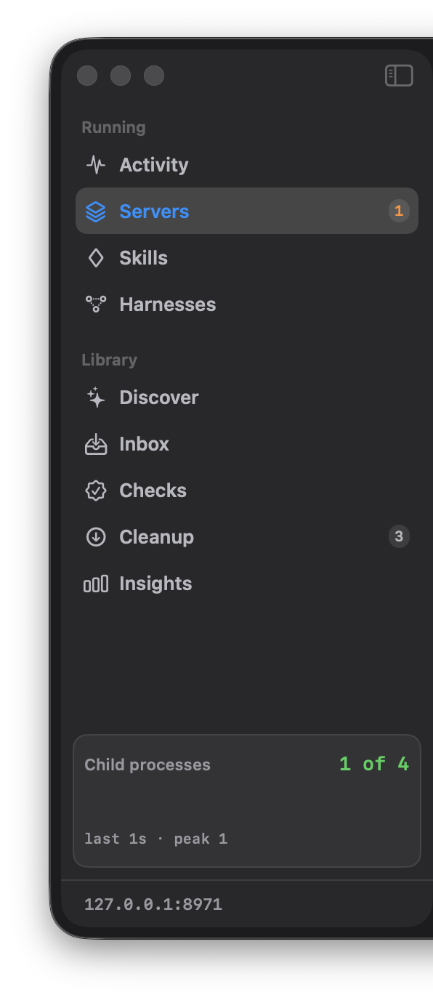
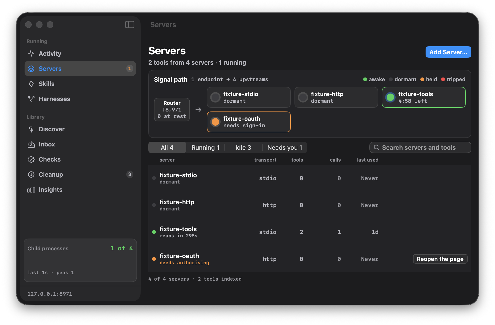
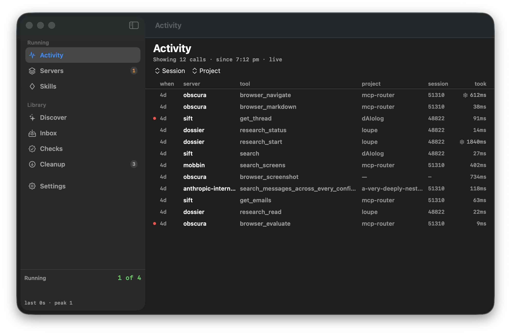
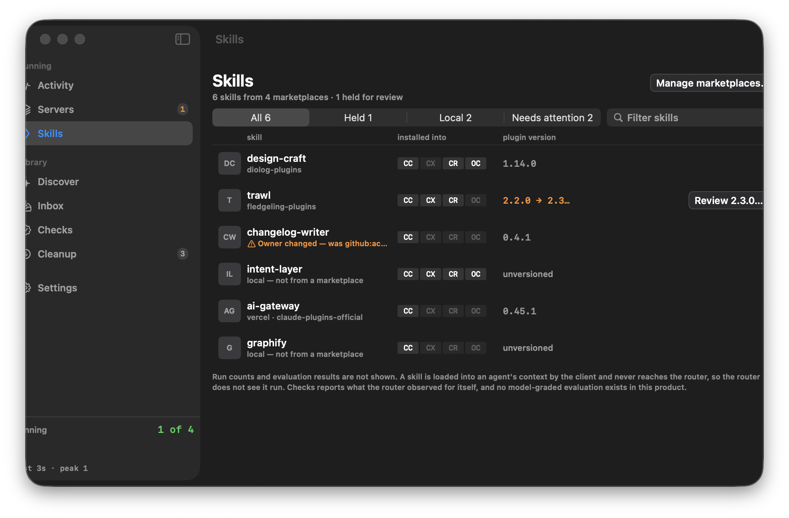
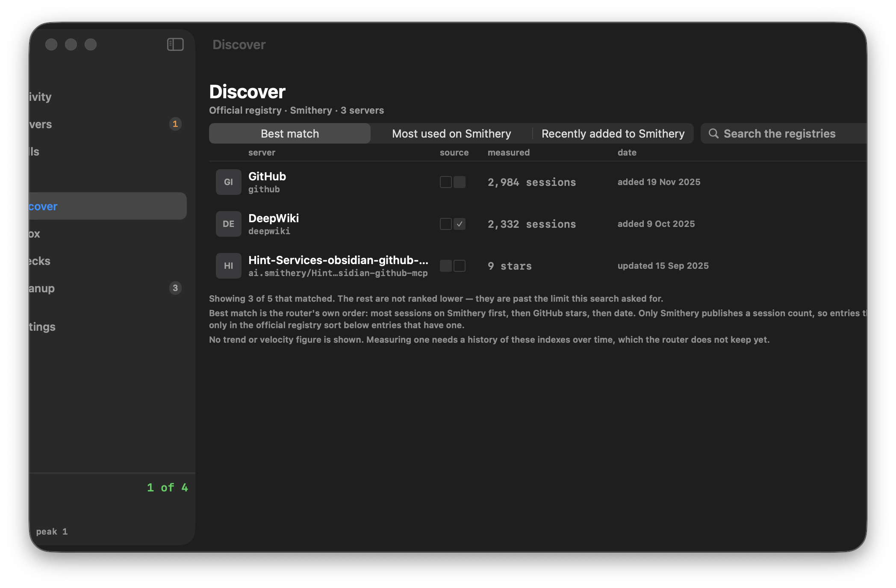
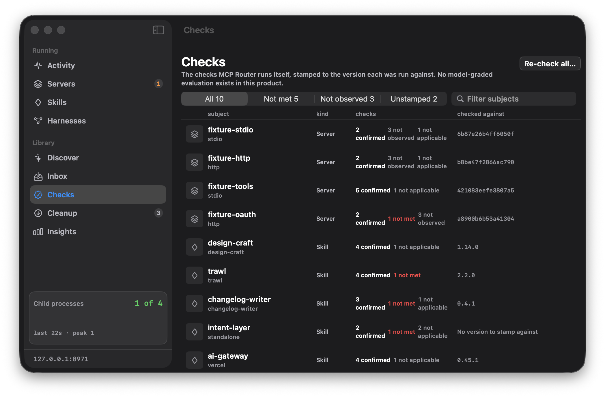
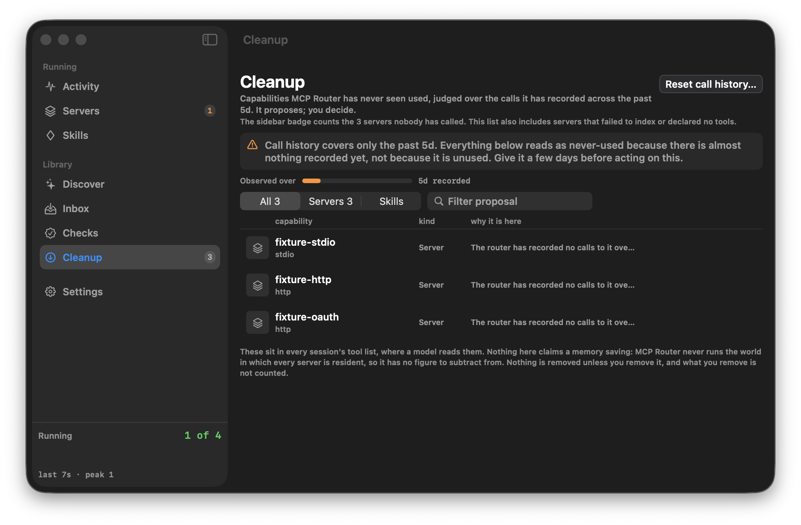
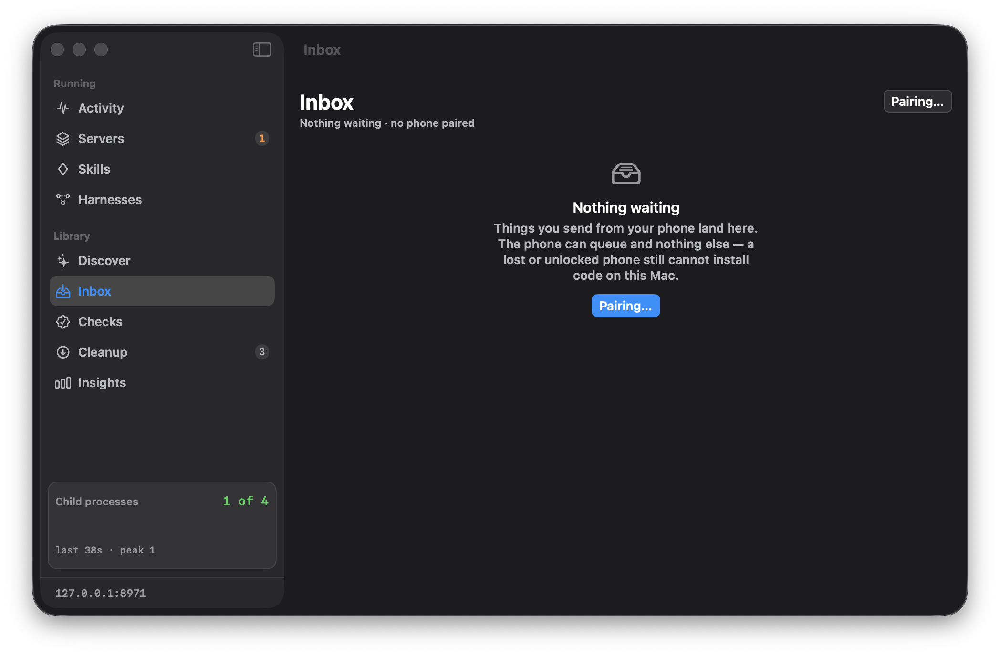
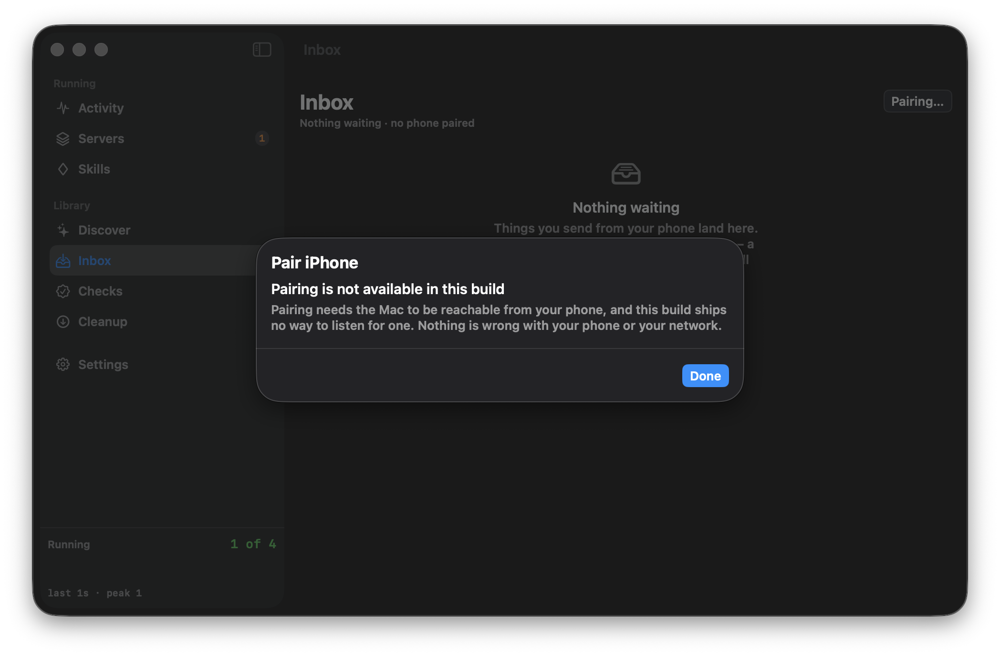
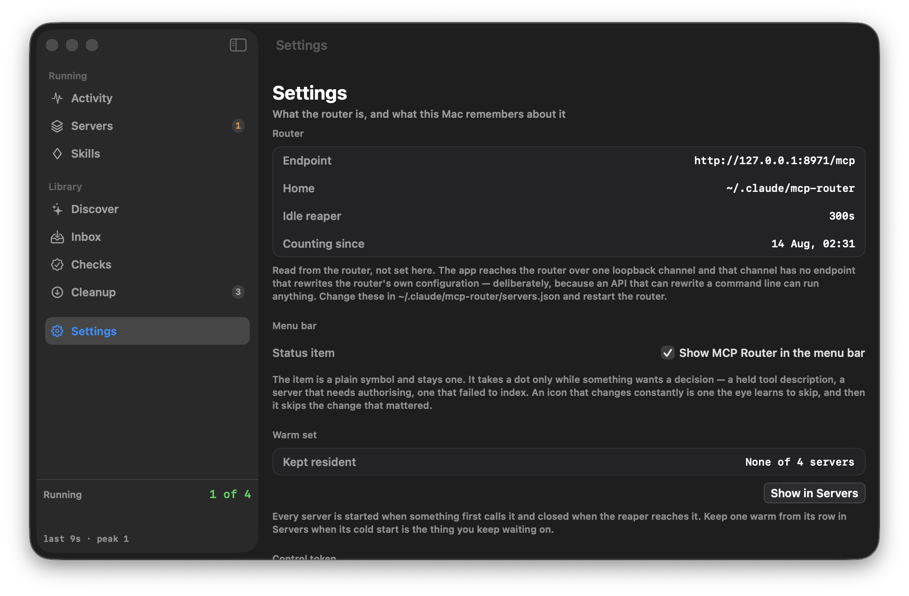
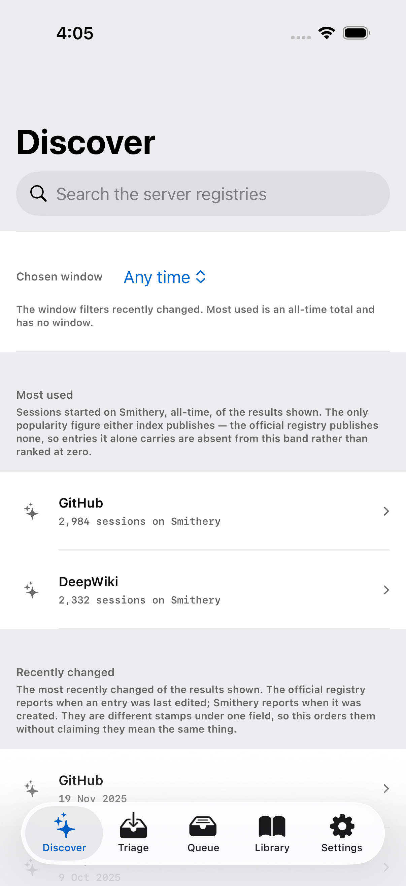
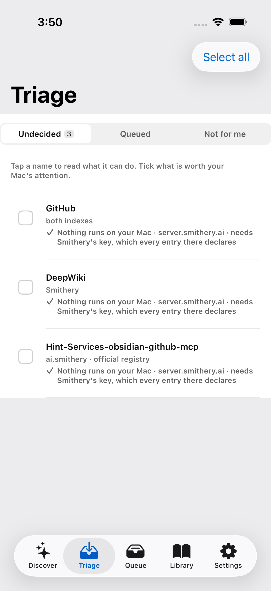
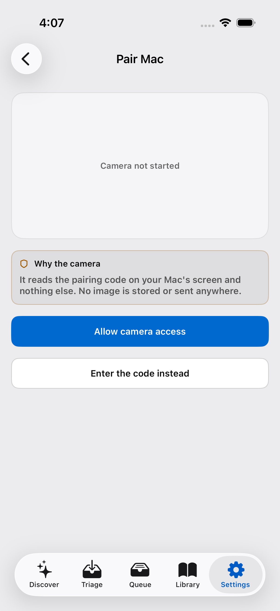
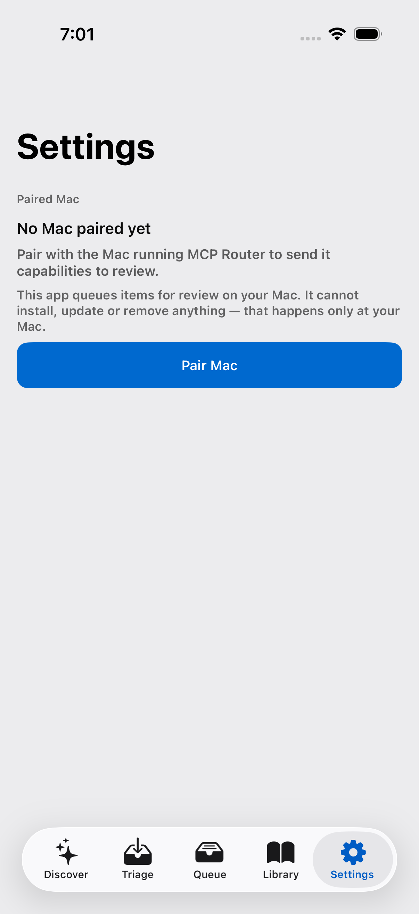
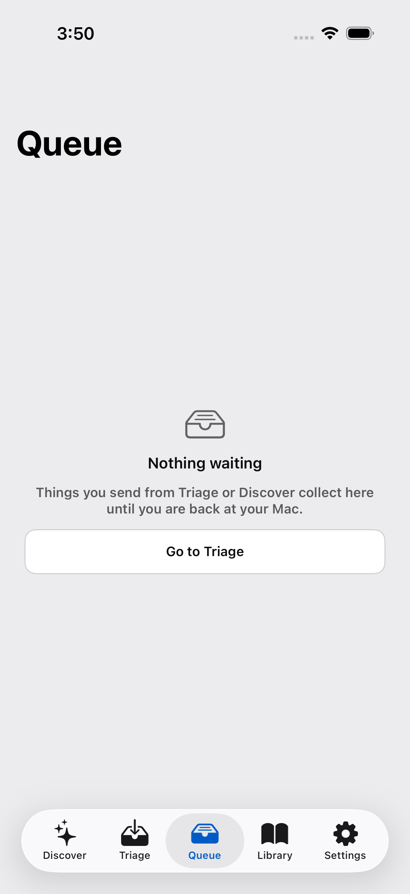
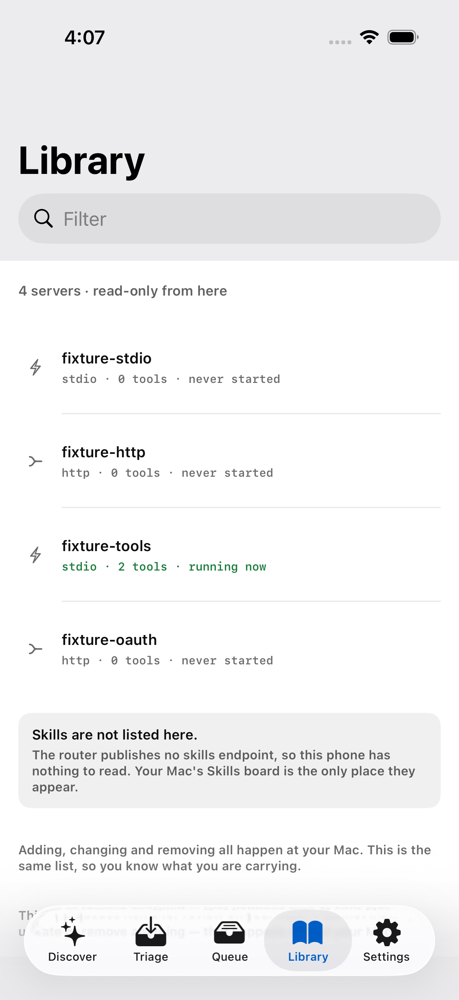
Flows
Each step carries what it was supposed to show. An atom that a still picture cannot answer is marked not observable rather than failed.
- triage.card
- queue.commitBar
- badge.count
- popover.inboxBand
- band.oldestFirst
- statusItem.dot
- review.sheet
- capability.statement
- button.install
- button.decline
- notifier.withdraw
- undo.bar
- queue.updated
- pairing.sheet
- code.8char
- pairing.countdown
- qr.scanner
- input.codeField
- paired.confirmation
- auth.start
- port.8880
- callback.listener
- callback.response
- token.store
- server.updated
- sheet.addServer
- tracker.running
- server.placard
- cleanup.row
- confirm.sheet
- server.removed
- manifest.cache
- child.count.zero
- child.spawned
- child.reaped
Surfaces
SURF-001 app://mac/servers
6 cases witnessed
SURF-002 app://mac/servers
4 cases filename
SURF-003 app://mac/activity
4 cases filename
SURF-004 app://mac/skills
3 cases filename
SURF-005 app://mac/discover
3 cases filename
SURF-006 app://mac/checks
2 cases filename
SURF-007 app://mac/cleanup
12 cases witnessed
SURF-008 app://mac/inbox
5 cases witnessed
SURF-009 app://mac/menubar-popover
3 cases
SURF-010 app://mac/pairing
4 cases filename
SURF-011 app://mac/settings
3 cases filename
SURF-012 app://ios/discover
2 cases witnessed
SURF-013 app://ios/triage
3 cases witnessed
SURF-014 app://ios/pair-mac
3 cases witnessed
SURF-015 ipc://router/core
4 cases
SURF-016 http://127.0.0.1:8879/control
3 cases
SURF-017 test://parity/surface
1 case
SURF-018 app://ios/settings
5 cases filename
SURF-019 app://ios/queue
1 case witnessed
SURF-020 app://ios/library
1 case witnessed
Components
The third enumeration. Types nobody opened are not covered, and the fraction says so.
CMP-001 · · ? instance(s)
not opened
CMP-002 · · ? instance(s)
not opened
CMP-003 · · ? instance(s)
not opened
CMP-004 · · ? instance(s)
not opened
CMP-005 · · ? instance(s)
not opened
CMP-006 · · ? instance(s)
not opened
CMP-007 · · ? instance(s)
not opened
CMP-008 · · ? instance(s)
not opened
Defects
| Case | Surface | What failed | Note | Evidence |
|---|---|---|---|---|
| CASE-0010 | SURF-010 | DEF-001 / REQ-015. Sheet title `Pair iPhone`; body `Pairing is not available in this build` and `this build ships no way to listen for one.` No 8-character Crockford code, no QR — checked by pattern on the dump, not by reading it. Characterised, not inventing a transport, and it stays a FAIL because REQ-015 asks for a code and a QR that this build does not have. What the build does instead is honest, and that is asserted separately as CASE-0142/0143 against REQ-019, which is a different requirement and does not discharge this one. Captured 20 Aug 2026 after the capture script's pairing press was fixed: it had been pressing from the Servers board, where the `Pairing…` control does not exist, and reporting the surface unreachable. | SURF-010.window.txt SURF-010.build.png | |
| CASE-0040 | SURF-014 | DEF-001. Characterised, not assert-corrected. The product stores a paired-Mac record without contacting the Mac. | I5-transport-proof.md | |
| CASE-0110 | SURF-010 | Raster of the pairing-unavailable sheet, and a FAIL against REQ-015 for what it does not show. `SURF-010.build.png`, window-scoped off the CGWindowID the launched pid owns, manifested in `evidence/shots/captures.json`. The earlier note named a sha for an image no longer on disk and cited no file at all; this one cites the capture it describes. | SURF-010.build.png |
Not covered
Rendered rather than omitted. This section is the difference between a finished campaign and one that looks finished.
| Id | What | Why it is not covered |
|---|---|---|
| CASE-0002 | SURF-001 | n/a: posting Cmd+1–7 to a background pid does not change SwiftUI's focused scene (measured: title stayed Inbox then Activity); proving the shortcuts requires the window frontmost, which this campaign refuses |
| CASE-0004 | SURF-009 | n/a: NSStatusItem is not an AXPress target while MCPRouter is backgrounded; this campaign never activates, so the popover cannot be opened or photographed |
| CASE-0006 | SURF-009 | n/a: NSStatusItem is not an AXPress target while MCPRouter is backgrounded; inbox band never opened |
| CASE-0109 | SURF-009 | n/a: status item not pressable in background; SURF-009 popover uncaptured. Raster-visual of the popover is unreachable under the no-activate constraint |
Methods
| Project | mcp-router |
|---|---|
| Started | 2026-08-19T01:43:08+00:00 |
| Lanes | macos-glass, ios-glass, swiftui, router-daemon, parity-wire |
| Axes varied | surface, state, viewport, theme, role, data-shape, execution-plane |
| Design of record | design/mocks/prototype.html |
| Declared sample | pairwise floor; 3-way on theme×viewport×surface (Mac boards) and role×state×network (honesty); oversample honesty-guardrails; drop high-contrast (no authored tokens); drop RTL (no localisation); pairing-transport cells blocked (I5: unimplemented) |
| Evidence | 163 artifacts referenced |
| Built | 2026-08-20T13:39:01+00:00 |